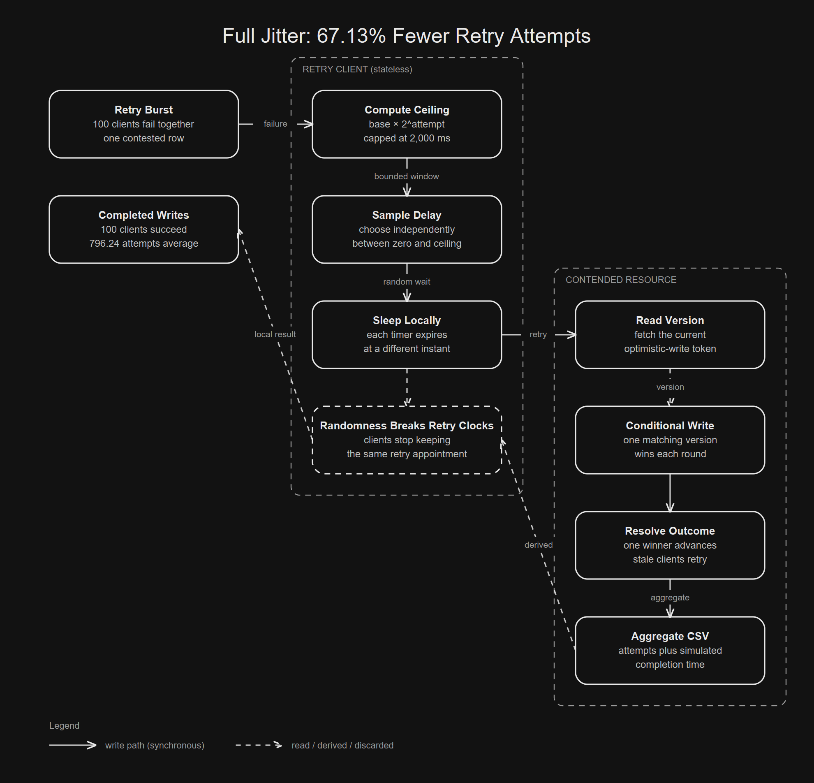

Clients remain synchronized across repeated failures.
Independent samples spread the next arrivals.
Idempotency and retry budgets remain separate requirements.

01 / The naive solution
The Obvious Retry Loop Waits Longer
The first implementation is almost embarrassingly reasonable. A request fails, so the client waits. Repeated failures increase the delay until a cap prevents absurd sleeps.
while (!request()) {
long ceiling = Math.min(capMillis, baseMillis * (1L << attempt));
Thread.sleep(ceiling);
attempt++;
}Each client becomes less aggressive over time. That sounds like exactly what an overloaded dependency needs.
one failed client
↓
wait longer
↓
try againThe catch is not inside one client. It appears between clients.
03 / Observable contention
Optimistic Writes Make the Collision Visible
Marc Brooker’s AWS Architecture Blog article models clients updating one shared row with optimistic concurrency control. A client reads a version and conditionally writes it.
read version V
↓
write only if version is still V
├─ match → commit and increment
└─ stale → retryOne client succeeds each round. Everyone else repeats work that cannot win. The store remains correct while retry traffic becomes expensive.
04 / Work amplification
The Work Grows Faster Than the Winners
With N clients arriving together, AWS explains that completion needs N rounds while total work grows with N². Early rounds contain almost the entire crowd.
round work = N + (N - 1) + … + 1
= N × (N + 1) / 2
= quadratic growthSuccess grows one writer at a time. Attempted work accumulates across every loser.
business outcomes: one successful update per client
system pressure: every read and conditional writeRetries can preserve correctness while making recovery slower.
05 / Incomplete control
A Cap Limits Sleep, Not Synchronization
The AWS formula multiplies a base delay exponentially and stops at a cap.
sleep = min(cap, base × 2^attempt)The linked simulator uses a 5 ms base and a 2,000 ms cap. The cap bounds the worst individual sleep. It does not make neighboring clients choose different durations.
client A ceiling ──────────────────→ retry
client B ceiling ──────────────────→ retry
client C ceiling ──────────────────→ retry
same instantThe algorithm changes frequency but preserves phase.
06 / Randomized coordination
Full Jitter Turns a Deadline Into a Window
Full jitter keeps exponential growth but changes what the result means. The computed value becomes the upper boundary of a sampling window.
ceiling = min(cap, base × 2^attempt)
sleep = random_between(0, ceiling)Every client samples independently. Some retry near the beginning, some near the end, and most stop colliding with the same neighbors.
window start window end
│ A C B D │
└───────────────────────────────────────────────┘
each letter is one independently timed retryAWS adds randomness to each wait so the aggregate traffic becomes more orderly.
07 / Arrival distribution
Random Arrivals Flatten the Retry Spikes
Fixed backoff produces clusters separated by empty periods. Full jitter spreads those calls toward an approximately constant arrival rate, matching the time series in the AWS article.
fixed: ████████________██████________████________
jitter: ██_██_█_██_█_██_█_██_█_█_██_█_██_█_█_██
time ───────────────────────────────────────────→This is not random load. It is randomized coordination. The retry window stays bounded while clients stop sharing a single clock edge.
08 / Source assumptions
The Benchmark Keeps AWS's Assumptions Visible
The repository ports AWS’s discrete event mechanism into Spring Boot. Its defaults use the article’s 10 ms mean network delay and reported variance of 4 ms. The linked AWS simulator expresses that distribution with a 2 ms standard deviation.
clients 100
runs per strategy 100
network mean 10 ms
network variance 4 ms²
base backoff 5 ms
backoff cap 2,000 msEach strategy receives deterministic seeds. The simulator records attempted conditional writes and simulated completion time, then averages the run set.
09 / Executable evidence
Local Full Jitter Performs Far Less Work
The checked in benchmark CSV contains one row per strategy.
strategy,avg_attempts,avg_completion_ms
no_backoff,2422.21,2029.38
capped_exponential,1868.00,63778.62
full_jitter,796.24,4910.71Full jitter used 67.13% fewer attempts than no backoff in this repository. It also completed 92.30% sooner than capped exponential backoff without jitter.
attempt reduction
= (2422.21 - 796.24) / 2422.21
= 67.13%
completion reduction
= (63778.62 - 4910.71) / 63778.62
= 92.30%AWS independently reports that full jitter cut calls by more than half for 100 contending clients.
10 / Honest comparison
Less Work And Faster Completion Are Different Claims
No backoff finished the local simulation in 2,029.38 ms but spent 2,422.21 attempts. Full jitter took 4,910.71 ms and only 796.24 attempts. Fixed exponential backoff stretched completion to 63,778.62 ms.
no backoff: faster here, much more work
capped exponential: less work, synchronized long waits
full jitter: low work, far shorter than fixed backoffJitter protects shared capacity. It does not promise that every client finishes before an aggressive retry loop.
11 / Load bearing code
The Code Needs Only One Changed Decision
The Java strategy treats the exponential value as a ceiling. The simulator owns the retry lifecycle while the strategy owns the sampling decision.
FULL_JITTER("full_jitter") {
@Override
double delayMillis(int attempt, SimulationConfig config,
RandomGenerator random) {
double ceiling = ceilingMillis(attempt, config);
return random.nextDouble(ceiling);
}
};Every client needs an independent random stream. Sharing one sampled delay across the fleet recreates synchronization with extra steps.
12 / Statistical precision
The Source's Units Deserve Careful Reading
The article describes network delay with a 10 ms mean and variance of 4 ms. Its source code constructs the normal distribution with Net(10, 2), where the second argument is standard deviation.
standard deviation = 2 ms
variance = 2²
= 4 ms²The benchmark exposes variance as squared time units. This keeps the source model while making the statistical parameter explicit.
13 / Semantic boundary
Jitter Cannot Make An Unsafe Retry Safe
A randomized duplicate payment can still be a duplicate payment. The operation must already tolerate repetition through an idempotency key, conditional write, deduplication record, or equivalent protocol.
safe operation + jitter = safer retry traffic
unsafe operation + jitter = delayed duplicate effectsJitter also needs a retry limit, a timeout budget, and overload controls. The algorithm spreads attempts. It does not decide whether another attempt is responsible.
14 / The cost
Randomness Trades Predictability For Coordination
Full jitter gives up a fixed client schedule. Neighboring clients may complete in a different order on every seed, and an individual may draw an inconveniently long wait.
predictable sleeps
↓
synchronized arrivals
↓
collisions and more retries
↓
larger synchronized sleeps
└──────────── feedback loopPredictable local timing can create unpredictable aggregate failure. Random local timing can create stable aggregate pressure.
15 / Build one
Build The Dumb Version Yourself
Start with a single versioned resource and keep the model small enough to inspect.
[ ] enqueue every client at the same logical instant
[ ] read the current resource version
[ ] conditionally write the version that was read
[ ] retry stale writes with a pluggable delay strategy
[ ] write attempts and completion time to CSVThen run the Spring Boot entrypoint. It produces the exact evidence used above.
./gradlew bootRun
./gradlew bootRun --args="--clients=100 --runs=100 --seed=42"Keep wall clock performance out of the claim. The program advances a simulated clock so laptop scheduling does not become data.
16 / Adversarial proof
Then Break It
Tests should attack properties, not copy a golden console string.
simultaneous start → every client eventually succeeds
single client → every strategy needs one attempt
fixed seed → metrics repeat exactly
higher contention → jitter still reduces work
late attempts → delays never exceed the cap
parallel run set → random state never leaksThe last case runs independent simulations on Java virtual threads. The measured model remains deterministic while the implementation faces real concurrent execution.
./gradlew testIf a strategy loses clients, crosses its cap, or depends on execution order, its attractive average is irrelevant.
17 / The part that generalizes
The Part That Generalizes Is Shared Timing
Retry storms are one instance of a larger systems mistake. Independent actors become coupled through identical deterministic schedules. Cache refreshes, lease renewal, polling, and reconnect loops can all acquire the same accidental clock.
Jitter is useful when harmful coordination comes from timing, not when the operation or retry policy is wrong. The better question is what the fleet will do when every client runs the same rule.
wrong model: choose the perfect retry time for one client
right model: choose a safe arrival distribution for the fleetPredictable waits make distributed failures synchronize. Random waits let collective recovery disperse.